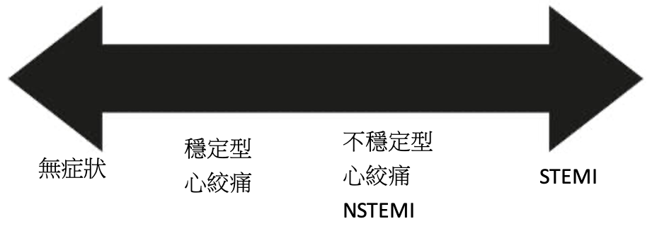
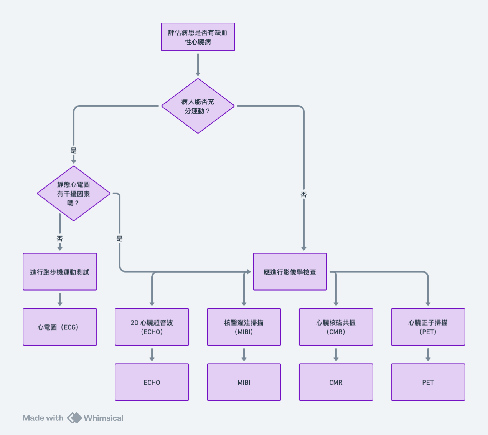
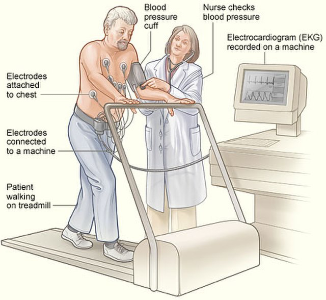
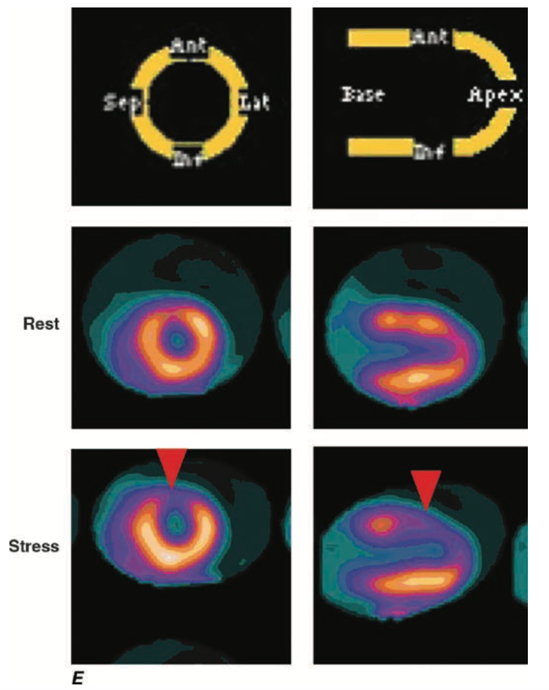

Coronary artery disease
Saturday, February 15, 2025
7:19 PM

|
風險等級 |
定義 |
|
High risk |
已知ASCVD、有糖尿病或CKD + 多重危險因子 |
|
Intermediate risk |
單一重大危險因子（如 LDL >190 mg/dL） |
|
Low risk |
無危險因子、年輕族群、預防性族群 |
|
CCS 等級 |
臨床特徵 |
|
I 級 |
劇烈運動（如跑步或快走）才會誘發心絞痛，日常活動不受影響。 |
|
II 級 |
一般日常活動（如爬樓梯 >1層、快走 >200 公尺）可誘發，但較輕度。 |
|
III 級 |
輕度活動（如走 100~200 公尺、爬 1 層樓梯）即可誘發，顯著影響日常生活。 |
|
IV 級 |
休息時即出現胸痛，或極輕微活動（如換衣服）即可誘發，通常提示嚴重 CAD。 |



HARRISON Principles of Internal Medicine 20th Edition, Page 1856, FIGURE 267-3
|
特性 |
Thallium-201 (Tl-201) |
Technetium-99m (Tc-99m, 如 Sestamibi 或 Tetrofosmin) |
|
半衰期 |
73 小時（較長） |
6 小時（較短） |
|
輻射劑量 |
較高（患者接受的輻射較多） |
較低 |
|
攝取機制 |
類似鉀離子 (K⁺) 被鈉鉀幫浦 (Na+/K+ ATPase) 攝取 |
被心肌細胞的粒線體攝取 |
|
影像對比 |
較差（γ 射線能量較低，約 69-80 keV，容易衰減） |
較佳（γ 射線能量較高，約 140 keV，穿透性較好） |
|
再分布特性 |
有（可用於判斷缺血與梗塞） |
無（只顯示血流灌注） |
|
適用於 |
慢性心肌缺血、存活性評估（Viability study） |
缺血檢測、心肌梗塞範圍評估 |
|
條件 |
優先測試 |
|
可運動、心電圖無干擾 |
Treadmill ECG |
|
無法運動、無氣喘 |
核醫 stress test（Adenosine, Dipyridamole）+ MPI |
|
COPD/氣喘 |
Dobutamine Stress Echo |
|
高風險需更精確診斷 |
Cardiac MRI 或 CTCA |
|
藥物 |
作用 |
備註 |
|
β-blockers |
降低心率與心肌耗氧量 |
穩定型首選 |
|
CCB（Verapamil, Diltiazem） |
替代 β-blockers |
若喘或有氣喘病史 |
|
硝酸鹽（Nitroglycerin） |
急性緩解症狀 |
與 PDE5 inhibitors 交互作用須注意 |
|
Ranolazine |
改善難治型心絞痛 |
心率與血壓影響小 |
|
Statins |
穩定斑塊、降 LDL |
所有 CAD 患者皆適用 |
|
抗血小板劑 |
Aspirin + P2Y12 抑制劑 |
DAPT 用於 PCI 後預防血栓 |
|
血管解剖 |
治療建議 |
|
LMA ≥ 50%、3 vessel + DM |
CABG |
|
單/雙 vessel、無 DM、EF 正常 |
PCI |
|
多處嚴重狹窄 + EF 差 |
CABG |
REFERENCE：
這篇需要仔細的書寫喔-內容有寫太過簡單了
你提到了 risk equivalents（DM, CKD, AAA），但缺少明確的風險分層邏輯。建議補充：
分類表：
|
患者狀況 |
優先選擇檢查 |
|
能運動，無 LBBB、無心律不整 |
Treadmill EKG |
|
無法運動，但能接受釋放劑 |
核醫（Adenosine, Dipyridamole）+ MPI |
|
COPD/氣喘患者 |
Dobutamine Stress Echo |
目前放在整體治療尾段，閱讀不易，建議用：
|
類別 |
定義 |
特徵 |
心電圖變化 |
心肌酶變化 |
|
穩定型心絞痛 |
運動誘發、休息緩解 |
可預測、持續 < 10 分鐘 |
無變化或 ST 降 |
正常 |
|
不穩定型心絞痛 |
休息即發、症狀加劇 |
持續 >10 分鐘、首次發作 |
ST 降或正常 |
正常 |
|
NSTEMI |
部分阻塞 + 心肌壞死 |
胸痛、Troponin 上升 |
ST 降、T 反轉 |
上升 |
|
STEMI |
完全阻塞 + 心肌壞死 |
壓迫性胸痛 >30 分鐘 |
ST 升 |
上升 |
A. 初步檢查：
B. Stress Test 評估表：
|
條件 |
優先測試 |
|
可運動、心電圖無干擾 |
Treadmill ECG |
|
無法運動、無氣喘 |
核醫 stress test（Adenosine, Dipyridamole）+ MPI |
|
COPD/氣喘 |
Dobutamine Stress Echo |
|
高風險需更精確診斷 |
Cardiac MRI 或 CTCA |
C. Stress Test 陽性標準：
A. 穩定型心絞痛藥物（控制缺血 + 預防事件）
|
藥物 |
作用 |
備註 |
|
β-blockers |
降低心率與心肌耗氧量 |
穩定型首選 |
|
CCB（Verapamil, Diltiazem） |
替代 β-blockers |
若喘或有氣喘病史 |
|
硝酸鹽（Nitroglycerin） |
急性緩解症狀 |
與 PDE5 inhibitors 交互作用須注意 |
|
Ranolazine |
改善難治型心絞痛 |
心率與血壓影響小 |
|
Statins |
穩定斑塊、降 LDL |
所有 CAD 患者皆適用 |
|
抗血小板劑 |
Aspirin + P2Y12 抑制劑 |
DAPT 用於 PCI 後預防血栓 |
B. 冠狀動脈介入治療選擇表：
|
血管解剖 |
治療建議 |
|
LMA ≥ 50%、3 vessel + DM |
CABG |
|
單/雙 vessel、無 DM、EF 正常 |
PCI |
|
多處嚴重狹窄 + EF 差 |
CABG |
|
類型 |
病因機轉 |
心電圖變化 |
心肌酵素變化 |
疼痛特徵與持續時間 |
|
Stable Angina |
固定粥狀硬化、運動誘發缺血 |
正常 / ST下降 / T倒轉 |
正常 |
<10 分鐘、運動誘發、休息緩解 |
|
Unstable Angina |
斑塊破裂 + 血栓形成不完全阻塞 |
ST下降 / T倒轉 |
正常 |
>10 分鐘、休息也會痛 |
|
NSTEMI |
血栓不完全阻塞 |
ST下降 / T倒轉 |
↑↑ |
持續性胸痛 |
|
STEMI |
血栓完全阻塞 |
ST Elevation |
↑↑↑ |
持續、劇烈胸痛，可伴休克 |
|
步驟 |
工具或指標 |
|
初步評估 |
病史（典型胸痛三項）+ 風險因子 |
|
靜息心電圖 |
ST/T 變化 |
|
運動心電圖（treadmill） |
若可運動、心電圖 interpretable |
|
核醫 MPI / Echo / MRI |
若無法運動或心電圖無法判讀 |
|
CTCA 或冠狀動脈攝影 |
若 stress test 陽性或高風險 |
|
項目 |
工具 |
|
血清酵素 |
Troponin I/T、CK-MB |
|
ECG |
每 10 分鐘重複一次，找 ST elevation |
|
CXR |
排除其他急症（如 Ao dissection） |
|
Echo |
看心室功能、是否心肌受損 |
|
條件 |
首選測試 |
|
能運動 + ECG interpretable |
Treadmill ECG |
|
不能運動 |
MPI + 藥理 stress（Adenosine） |
|
COPD / 氣喘 |
Dobutamine Stress Echo |
|
LBBB / 起搏器 / baseline ST異常 |
Stress Echo or MPI |
使用 OneNote 建立。
{kind=link}